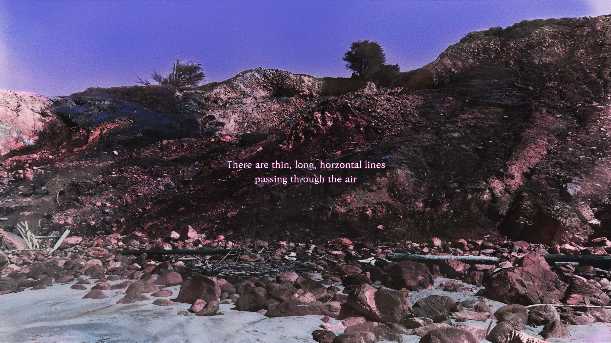
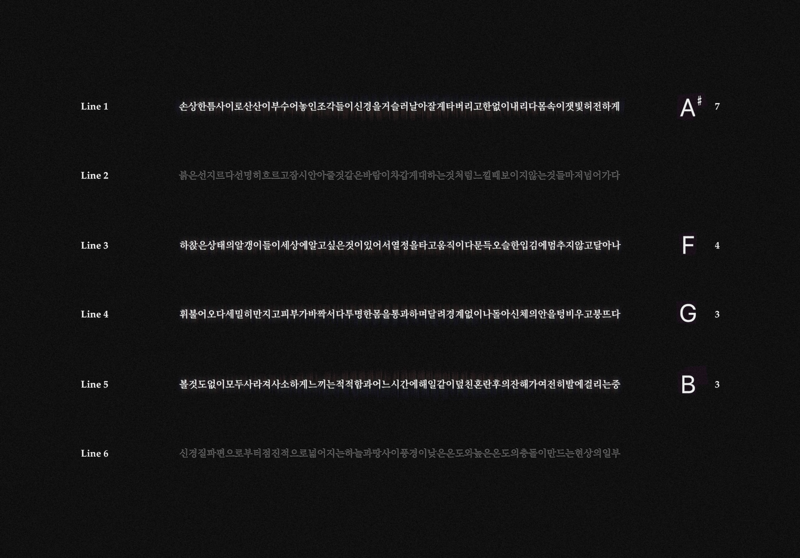

Music composer and Visual artist
wooharan.o8kk@gmail.com

Woo Haran, born in 2000 in South Korea, is a composer and video artist based in Seoul. His creative works unfold within the conceptual universe of [O8kk], where symbols of the moon, clouds, and stars are central to shaping his storytelling and artistic exploration.
Woo studied music composition at the California Institute of the Arts (CalArts) under mentors Michael Pisaro, Ulrich Krieger, and Karen Tanaka, which helped shape his multidisciplinary approach and vision.
In 2021, Woo was named National Second Winner by the Music Teachers’ National Association in the United States for his composition. In 2024, Woo received the Special Prize at the Arte Laguna Prize in Venice, Italy for his video artwork.
With a vision to create works that stand alone yet interconnect as part of a larger, evolving narrative, Woo invites audiences into a dynamic universe where diverse media come together to tell profound, interconnected stories.
Artist Statement
My work revolves around the concept of interconnected narratives, where individual puzzle pieces come together to create a cohesive whole. I created [O8kk] as a conceptual space to unify these narratives—a universe where diverse ideas, symbols, and mediums converge to form a singular artistic vision. This space allows me to explore the fluid relationship between isolated moments and their place within a broader context, inviting viewers to experience both the solitude and unity that exist within my creations.
Within [O8kk], I merge music, film, poetry, and visual art to build layered narratives that evolve across multiple works. Inspired by the beauty of landscapes and natural phenomena, I aim to evoke human emotions and create fleeting yet profound connections. This universe provides the structure I need to translate these moments into sensory experiences, offering audiences the freedom to interpret and engage with the work through their own perspectives.
Ultimately, [O8kk] allows me to delve deeper into exploration of interconnectedness, expressing the delicate balance between the individual and the collective, the transient and the timeless.
O, The Busy Idle Journey
2024
Duration: 4'
O, The Busy Idle Journey, aligns with the universe of [O8kk], introducing Person Moon, an enigmatic guide through dreamlike landscapes. The film blends surreal visuals with an improvisational score by Woo Haran and Ulrich Kriger's saxophone.
Synopsis:
The full moon descends from the night sky to Earth, transforming into a human form—Person Moon. What follows is a dreamlike odyssey through surreal landscapes, where Person Moon appears tirelessly busy but achieves little. Near the water’s edge, the character shares the “Sounds of the Universe,” throwing a big question mark to the world.
Stills of O, The Busy Idle Journey
윤슬 (Ever-Changing) is an audiovisual installation, based on an original musical composition of the same name for an 8-key marimba and two of processed field recordings. The installation features clips of streaming water, shimmering over ripples—reflecting the meaning of the title “윤슬”—within a computational environment. It intermittently displays the inventive graphic notation for the 8-key marimba, fragments of original poems about water circulation, and visual elements reminiscent of video editing software. The juxtaposition of the uninterrupted flow of water against the structured, computer-generated visuals creates a compelling contrast.
Still of 윤슬(Ever-Changing)
Na Ra Ga Da is a visualizer of the original musical composition of the same name. The cyclical structure of the composition is derived from an alphabetical and musical analysis of the word “Na Ra Ga Da,” a non-standard romanization of the Korean word “날아가다,” meaning “fly.” The soundscape incorporates an audio recording of boiling water, symbolizing water molecules “flying” into the air. It is complemented by improvisational performances on finger cymbals, a plastic fork, and a woodwind instrument, each imitating the sound from a silver-nickel pot vibrating on fire, water bubbles, and gas. The video visually interprets the music, depicting the gradual change of evaporating water.
Still of Na Ra Ga Da
오슬 (Ever-Passing) is a video artwork that explores the concept of water passing through the air in various forms, such as vapor and clouds, to evoke diverse emotions for humans, along with streams of wind. In the final scene, the "Person Moon" from O, The Busy Idle Journey, a short film by Woo Haran, appears lying on the ground, experiencing the winds beneath a colorful sky.

Still of 오슬 (Ever-Passing)
Evocator is a video artwork, following, based on the original composition of the same name. Inspired by the idea of multiple streams of wind, each with unique voices singing different melodies, the composition echoes the concept of counterpoint, where independent melodies harmonize. The piece utilizes six field recordings of winds, isolating narrow frequency ranges to reveal human-like sounds that resemble singing. This technique draws inspiration from EVP (Electronic Voice Phenomenon) in ghost hunting. The video features textual poems reflecting the emotional turmoil triggered by cold winds. It incorporates a computational visual aesthetic consistent with the other works representing water circulation in the universe [O8kk].

Still of Evocator
aeng are mysterious obejcts discovered near water in the universe [O8kk]. aeng is featured in many works of Woo Haran. Check out aeng's
Instagram
Experience & Achievements
- Special Prize at Arte Laguna Prize 2024 (Italy)
- National Second Winner in Music Teachers’ National Association (MTNA),
National Composition Competition, Young Artists 2021 (United States)
- Poetry Award in The 47th Central Council Art and Literature Award
for Korea Reunification 2016 (South Korea)